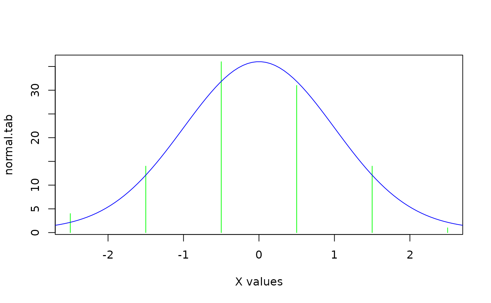

Scale numbers into a new range
rescale.RdScale a vector or matrix of numbers into a new range.
Details
rescale performs a simple linear conversion of x into the range specified by newrange. Only numeric vectors, matrices or data frames with some variation will be accepted. NAs are now preserved - formerly the function would fail.
Examples
# scale one vector into the range of another
normal.counts<-rnorm(100)
normal.tab<-tabulate(cut(normal.counts,breaks=seq(-3,3,by=1)))
normal.density<-rescale(dnorm(seq(-3,3,length=100)),range(normal.tab))
# now plot them
plot(c(-2.5,-1.5,-0.5,0.5,1.5,2.5),normal.tab,xlab="X values",
type="h",col="green")
lines(seq(-3,3,length=100),normal.density,col="blue")
